Разработка алгоритма, составление, отладка и выполнение циклической программы с известным числом повторений
Выполнить задания (см. ниже). Файлы с выполненными заданиями сохранять в личной папке в каталоге lab8. В имени проекта (проектов) указать номер ПЗ.
Оформить в MS Word отчет о практической работе, включающий:
- тему практической работы (ПР)
- цель работы
- задание 1 на ПР
- листинг программы задания 1 (стиль
Программный кодсо шрифтомCourier New) - результат выполнения программы задания 1 (скриншот, аккуратно обрезанный)
- контрольные вопросы и ответы на них
- выводы по работе
... и так для каждого задания ...
Отчет распечатать и представить при защите ПР.
Задания
Задание 1. Изобразить блок-схему алгоритма и составить программу, вычисляющую значения выражения:
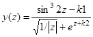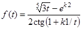 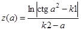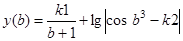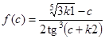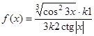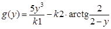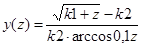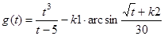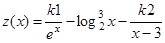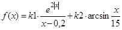
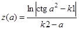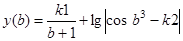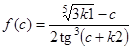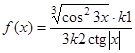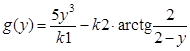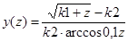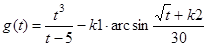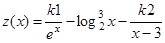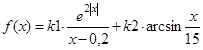
при каждом значении переменной
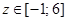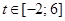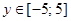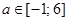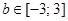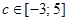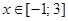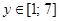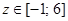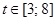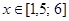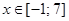
, изменяющейся с шагом
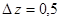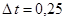 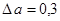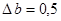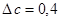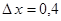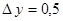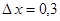.
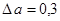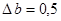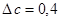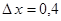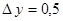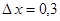.
Использовать цикл for. Значения констант k1 и k2 - произвольные. Учесть возможность возникновения исключений во время выполнения программы. Имя проекта lab8_1
Задание 2. Изобразить блок-схему и составить программу, вычисляющую сумму ряда с помощью цикла for:
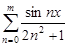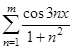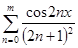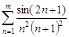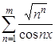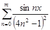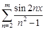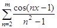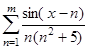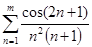 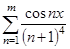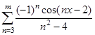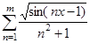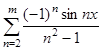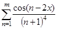.
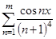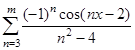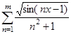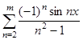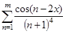.
Количество членов ряда (m) вводить с клавиатуры. Имя проекта (при создании нового проекта) lab8_2
Поздравляю! У Вас есть шанс успеть оформить лабораторную работу прямо сейчас, а дома только распечатать. Приступайте!
Контрольные вопросы
- Понятие цикла
- Виды циклов
- Циклические вычислительные конструкции
- Цикл с известным числом повторений. Блок-схема и принцип действия
- Цикл с известным числом повторений на С
- Пропуск итераций
- Досрочный выход из цикла